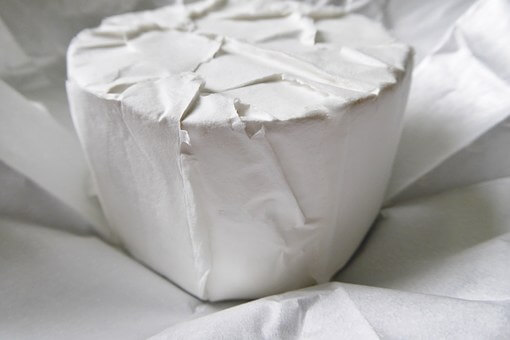

| 1グループ(3人まで) |
|---|
| 3,500円 |
五月山牧場でのびのび育った乳牛から搾った生乳を使ってカマンベールチーズづくり体験をしていただけます。 カマンベールチーズはフランスの北西部の村カマンベールで生まれたチーズです。 今では世界中で愛されつくられており、チーズの中でも代表的な存在として”チーズの女王”とも呼ばれています。 軟質チーズの表面に白いカビを発生させ熟成させつくります。 一般的には熟成により深い味わいや香りがあるカマンベールチーズですが 五月山牧場ではお子様にも喜んで食べていただけるようクセの少ないチーズをつくります。
小さなお子様にも楽しく参加いただけるようお子様用の調理台や椅子の準備もございます。 なかなかできない貴重なチーズづくり体験を通じてお子様の成長のきっかけや楽しい思い出をつくります。 経験豊富なスタッフが誠心誠意サポートはさせていただきますが、 未就学の小さなお子様につきましては保護者様同伴にてご参加いただきますようお願い申し上げます。
カマンベールチーズは熟成期間を約3週間要するため、残念ながらその場でお渡しすることができません。 体験後に五月山牧場でつくったカマンベールチーズを1グループ様につき1個無料プレゼントいたします。 また当日つくっていただいたカマンベールチーズについても熟成後、ご自宅に発送します。 お間違えのないよう参加前に必ず住所の確認お願いいたします。